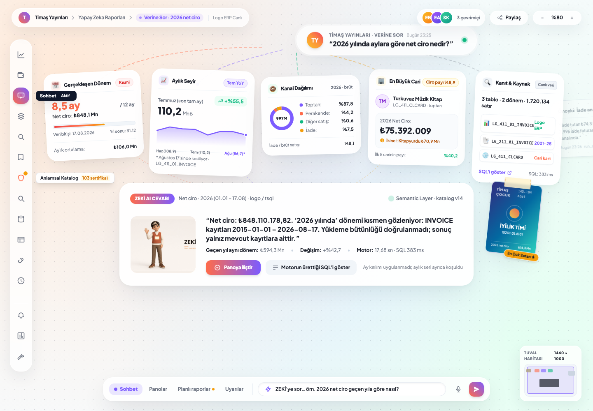
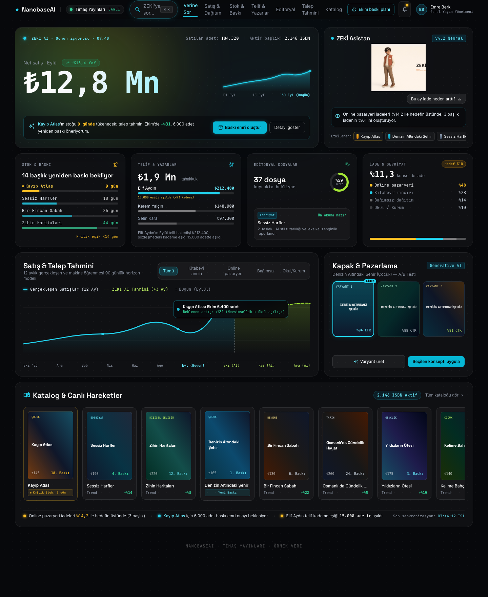
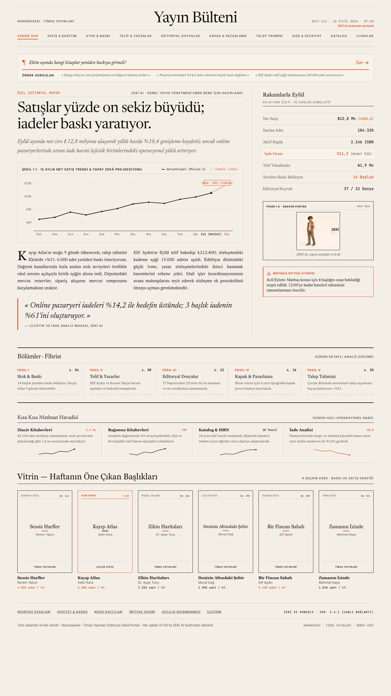
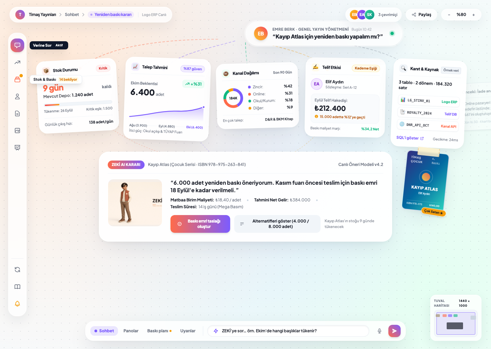

Kanvas şablonu,
gerçek verilerle.
Sonsuz Kanvas ana tasarım dili olarak seçildi. Portal menüsü ve modülleri uygulamadaki gerçek yapıdan alındı; tamamlanan BI modülü canlı Logo ERP sorgularıyla ekranda.

Sonsuz Kanvas · canlı veri
Stitch kanvasının birebir kendisi; yalnız rakamlar canlı Logo ERP'den. 2026 net ciro 848,1 Mn ₺, Temmuz YoY +%55,5, ilk cari Turkuvaz 75,4 Mn ₺, en çok satan İYİLİK TİMİ 145.184 adet.
Şablonu aç ↗
Obsidyen Komuta
Aurora ışıma, dev gradyan rakam, ⌘K komut paleti.
Aç ↗
Sabah Bülteni
Kâğıt, mürekkep, tek vurgu vermilyon. Kart yok, gölge yok.
Aç ↗
Sonsuz Kanvas
Sorudan yelpaze gibi açılan eğik kartlar, cam dock, karar kartı.
Aç ↗
Konsept ekranları Stitch API ile aynı projede üretildi; kitap adları ve tutarları örnektir. 04-portal-canvas.html elle yazıldı, menüsü uygulamanın kendi kaynağından, rakamları 10.09.2026 23:26'da canlı Logo ERP üzerinde çalıştırılan sorgulardan gelir. Dosya o anın durağan görüntüsüdür; canlı portalda aynı kartlar API'den beslenir.